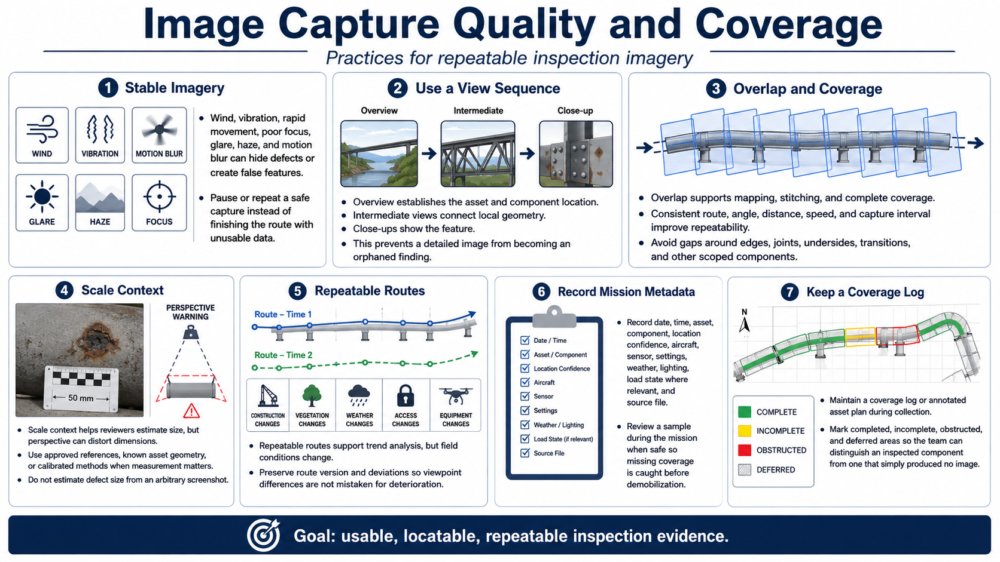

Capturing Useful Inspection Data
Connecting to LMS... Progress: in progress

Narration
Stable imagery is essential. Wind, vibration, rapid movement, poor focus, glare, haze, and motion blur can hide defects or create false features. Pause or repeat a safe capture instead of completing the route with unusable data.
Use overview, intermediate, and close-up views. The overview establishes the asset and component location. Intermediate views connect local geometry. Close-ups show the feature. This sequence prevents a detailed image from becoming an orphaned finding.
Overlap supports mapping, stitching, and complete coverage. Consistent route, angle, distance, speed, and capture interval improve repeatability. Avoid gaps around edges, joints, undersides, transitions, or other scoped components.
Scale context helps reviewers estimate size, but perspective can distort dimensions. Use approved references, known asset geometry, or calibrated methods where measurement matters. Do not estimate defect size from an arbitrary screenshot.
Repeatable routes support trend analysis, yet construction, vegetation, access, weather, and equipment change. Preserve route version and deviations so differences in viewpoint are not mistaken for asset deterioration.
Record date, time, asset, component, location confidence, aircraft, sensor, settings, weather, lighting, load state where relevant, and source file. Review a sample during the mission when safe so missing coverage is caught before demobilization.
Maintain a coverage log or annotated asset plan during collection. Mark completed, incomplete, obstructed, and deferred areas so the team can distinguish an inspected component from one that simply produced no image.